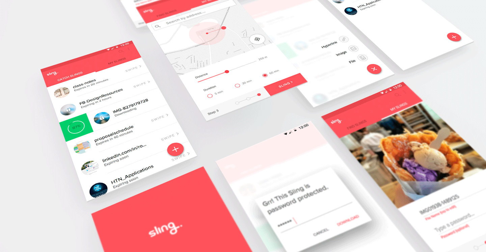
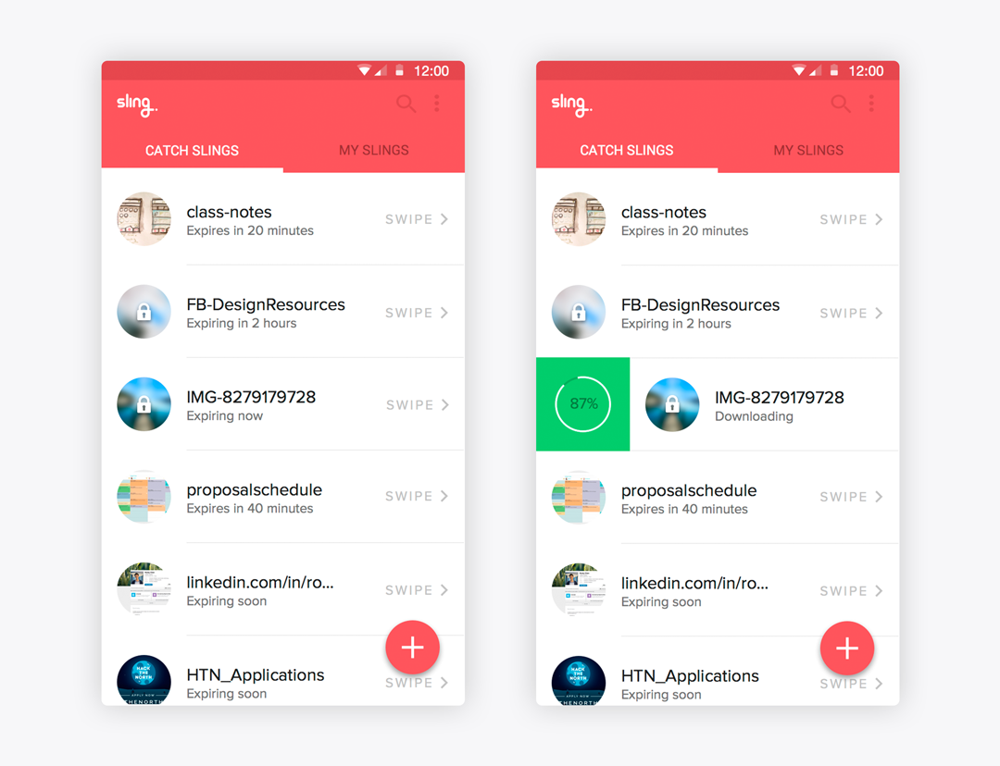

Sling
Sling is a location based file sharing platform that makes sharing faster than ever before. It takes seconds for a file to be shared with hundreds of people at a specified location.
Downloading
The initial default screen featured a list of "slings" the user match "catch" if they were in the geographial proximity. A user would simply tap download to obtain the file or tap the floating action icon to upload one. However, when the buttons overlapped it made it difficult for the user to select the intended action.
The solution was to use a swipe action to download files. Swiping a sling will reveal a progress box where you may track your download. This motion was to mimic the motion of "slinging" an object; linking the action of using the product to it's brand identity. Motion versus tap was how Sling was able to differentiate between these two actions.
Brief Overview of the Upload Process
Users first select the file type; edit names/passwords; then set location, distance and duration.
Consumable Language
From light colours, rounded corners, to friendly words, Sling presents itself as a delightful and welcoming product. In the first iterations, each Sling would be accompanied by a timer that would count down it's duration to the second. This place a sense of urgency which was unwanted. Additionally, this information was not actually accurate to the second; this disconnect can be quite frustrating. Instead, I opted for timers that rounded to the hour and minute - which then turned to "expiring soon" and finally, "expiring now".
Shh, it's a Secret!
I can't even remeber what I had for dinner last night, how am I supposed to remember my different Slings if I don't name them properly? The preview makes that easy, but we can't have a preview for a private photo now, can we? To solve this solution, Sling will take the image, file, or website and blur it out. It will then add a white lock icon to further obstruct the view. The familiar colours now hint users what the original file was, without giving away the file to the public.

Let's be Friends
( Tell me a joke or something )
Say hello at rockyhchen@gmail.com or connect with me on LinkedIn.